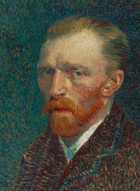
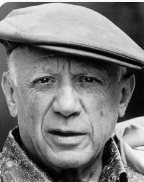
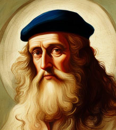

האמנים שלנו
וינסנט ואן גוך

על האמן: אחד הציירים המפורסמים בהיסטוריה, שייך לזרם הפוסט-אימפרסיוניזם. ידוע בסגנון הצבעוני והדרמטי שלו ובטקסטורת המכחול הייחודית.
> לחצו כאן כדי לראות את יצירתו המפורסמת "ליל כוכבים"פבלו פיקאסו

על האמן: אמן ספרדי, אחד המובילים בזרם הקוביזם. ידוע ביצירותיו המגוונות וביכולתו לשנות סגנונות לאורך הקריירה שלו.
לחצו כאן כדי לראות את יצירתו המפורסמת "גרניקה"לאונרדו דה וינצ'י

על האמן: אמן איטלקי מתקופת הרנסאנס, ידוע בציוריו המפורסמים כמו "מונה ליזה" ו"הסעודה האחרונה". בנוסף, היה גם מהנדס, מתמטיקאי ומדען.
לחצו כאן כדי לראות את יצירתו המפורסמת "מונה ליזה"